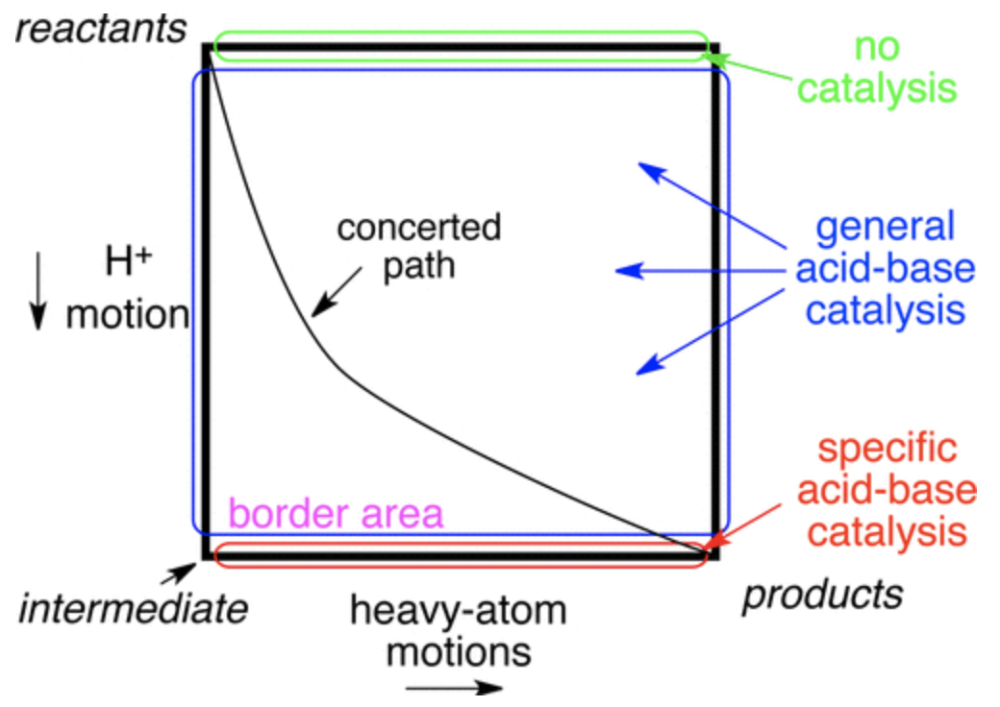
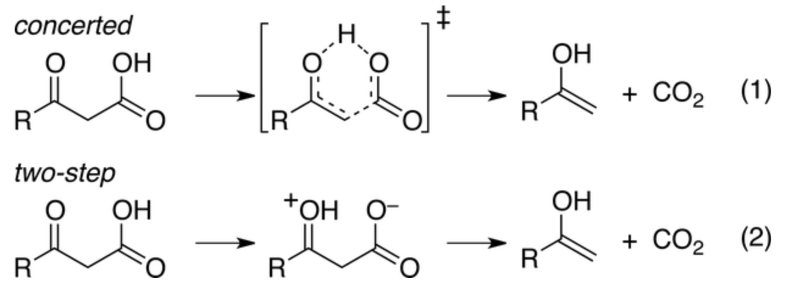
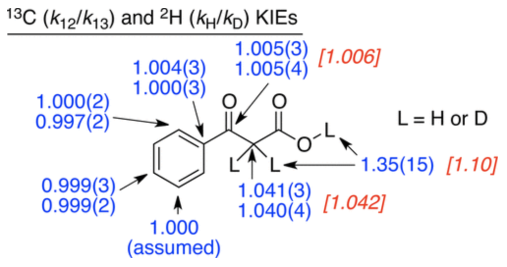
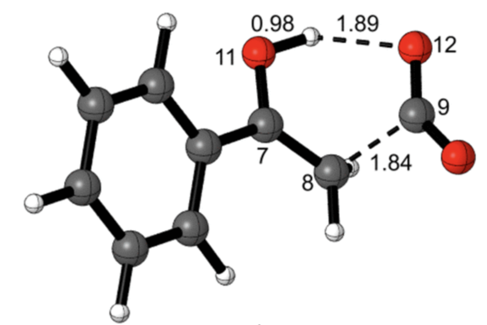
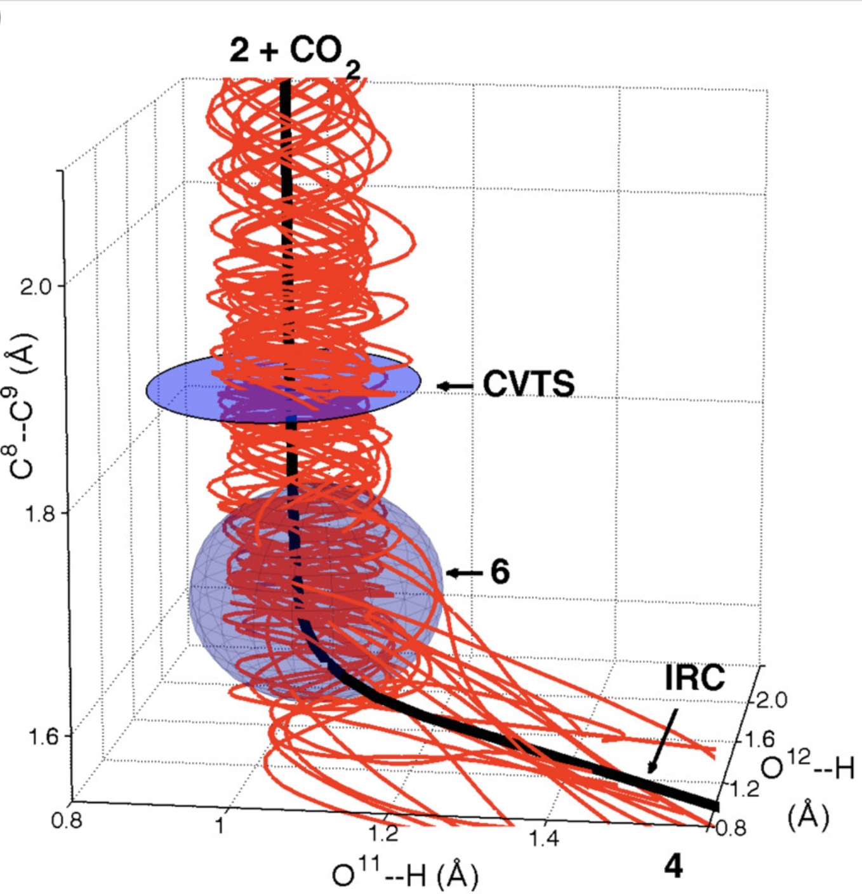
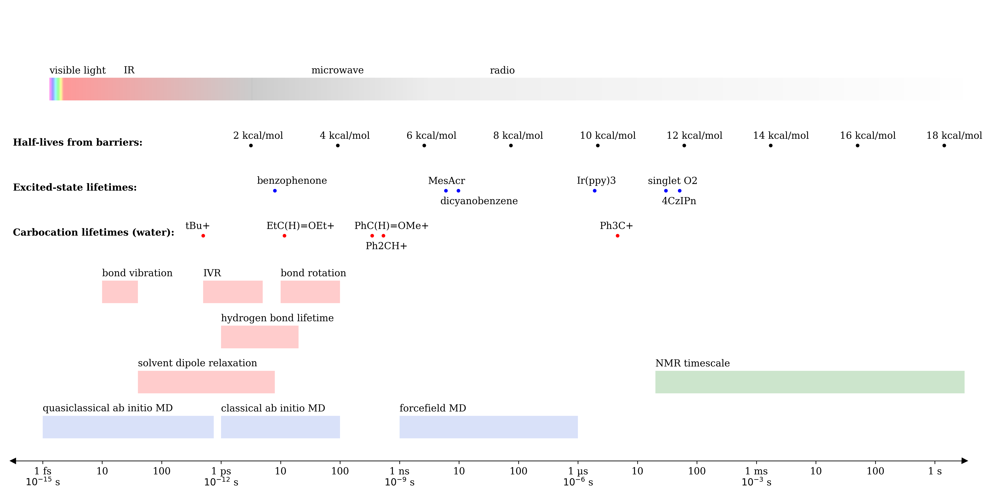
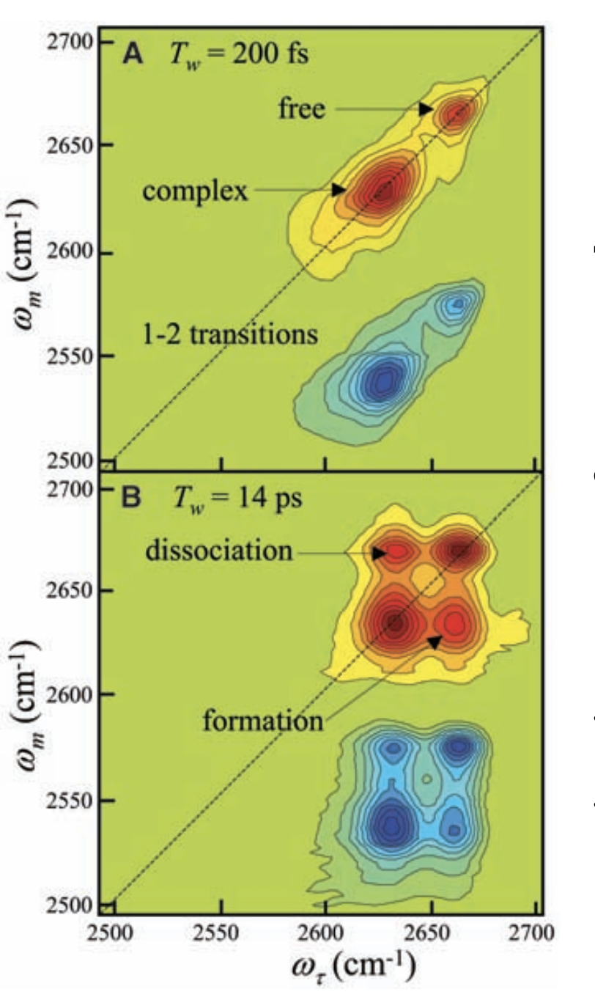
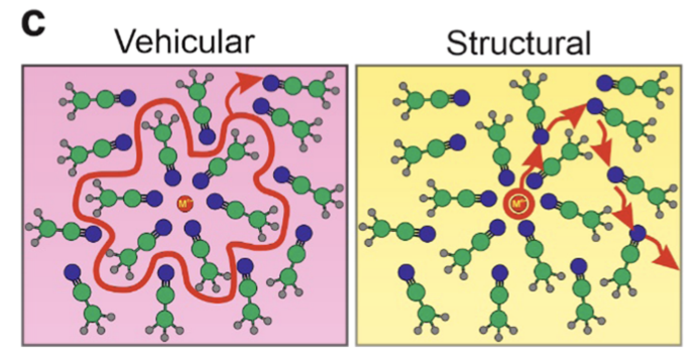
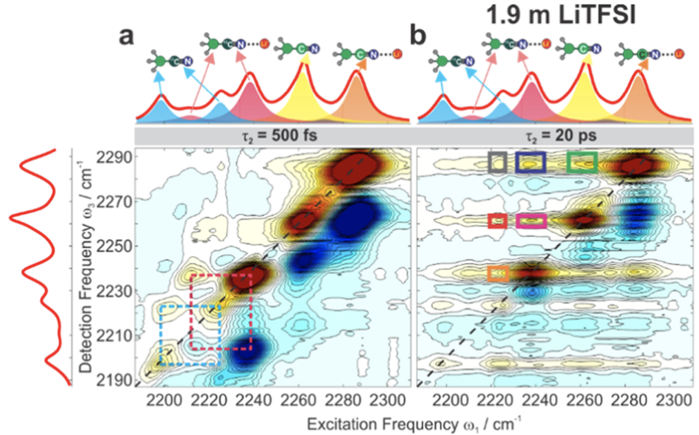

The growing accessibility of computational chemistry has, unfortunately, led to a preponderance of papers with bad computations. Organic chemists are all too familiar with the “DFT section” of an otherwise high-quality publication which typically contains a transition-state structure or two, some sort of enigmatic cartoon purporting to explain the observed selectivity, and perhaps an uninterpretable NCIPLOT cited as evidence for the preceding claims.1
Faced with this sort of landscape, experimental chemists typically adopt one of two faulty heuristics: excessive credulity or universal skepticism. Being too trusting is dangerous, as evidenced by work showcasing the manifold ways that simulations can deceive the unwary scientist. Almost anyone who’s made a catalyst predicted to be better by computations knows this well (even when the computations are your own).
However, equally dangerous—and, in my view, less appreciated—is the creeping ennui that diminishes the entire field. This is exemplified by statements like “I don’t believe computations can ever be predictive,” “You can make DFT say anything you want to,” or, more delicately, “Computations are more for generating hypotheses, not being physically correct.” Although most people may be too polite to admit this to their computational collaborators, this nihilism is pervasive—just listen to the conversations as students walk back from a departmental seminar.
This viewpoint is wrong. The existence of bad computational models does not mean that all models are bad, nor does it imply that the task of creating models is inherently futile. Examples from other scientific fields, like orbital mechanics and fluid dynamics, indicate that computations can achieve impressive degrees of accuracy and become pivotal and trustworthy components of the scientific process. Closer to home, even the most skeptical chemists would admit that for e.g. calculating IR frequencies in the ground state, DFT shows impressive predictive accuracy (modulo the usual systematic error). There’s no intrinsic reason why accurately modeling chemical systems, even prospectively, ought to be impossible; chemistry is not a social science.
Why, then, is this variety of skepticism so common? Part of the problem comes from the bewildering milieu of options available to practitioners in the field. While a seasoned expert can quickly assess the relative merits of BYLP/MIDI! and DSD-PBEP86/def2-TZVP, to the layperson it’s tough to guess which might be superior. Without transparent heuristics by which to judge the quality of computational results, it’s no surprise that zeroth-order approximations (“DFT good” or “DFT bad”) have become so common among non-experts.2
Another issue is the generally optimistic demeanor of computational chemists towards their field. While the temptation to emphasize the potential upside of one’s research area is understandable, overestimating the capabilities of state-of-the-art technology inevitably leads to a reckoning when the truth becomes obvious. Except in certain circumscribed cases, we are still far from any predictive models of reactivity or selectivity for typical solution-phase reactions, various purported “breakthroughs” notwithstanding. Based on questions I’ve heard in talks, this uncomfortable truth is not universally understood by experimental audiences.
What, then, are the practical conclusions for computational chemists? Firstly, we should not be afraid to be our field’s own harshest critics. Allowing low-quality work into the literature erodes trust in our field; although raising our standards may be difficult and unpopular in the short term (kinetics), in the long run it will benefit the field (thermodynamics). You never get a second chance at a first impression; every bad paper published causes good papers to get that much less attention.
Secondly, we should work to develop consistent standards and workflows by which one can obtain reliable computational results. Just like there are accepted means by which new compounds are characterized (1H NMR, 13C NMR, HRMS, IR), there ought to be transparent methods by which transition states can reliably be found and studied. The manifold diversity of parameters employed today is a sign of the field’s immaturity—in truly mature fields, there’s an accepted right way to do things.3 The growing popularity of tools like crest is an important step in this direction, as is the ability to to use high-level post-Hartree–Fock wavefunction methods like DLPNO-CCSD(T) to refine single-point energies.
Finally, we must be honest about the limitations of our techniques and our results. So much about the chemical world remains mysterious and far beyond our understanding, let alone our ability to reproduce in silico. Far from being a failure for the field, however, this is something to be acknowledged and celebrated; science is only possible when there remain secrets to be found.
Between the Scylla of gullible credulity and the Charybdis of defensive nihilism, we must chart a middle way.
Thanks to Hayden Sharma for reading a draft of this post.
Footnotes
NCIPLOT is a program which allows one to visualize non-covalent interactions; although the output can be useful, for large molecules it's also very overwhelming.
A related idea is "epistemic learned helplessness", where people unable to evaluate the quality of a certain kind of argument resolve not to be persuaded by this argument one way or the other.
I want to thank Frank Neese and coworkers for publishing their entire transition-state-finding workflow in detail, which I've found very useful and is certainly a step in the right direction.
This is the first in what will hopefully become a series of blog posts focusing on the fascinating work of Dan Singleton (professor at Texas A&M). My goal is to provide concise and accessible summaries of his work and highlight conclusions relevant to the mechanistic or computational chemist.
A central theme in mechanistic chemistry is the question of concertedness: if two steps occur simultaneously (“concerted”) or one occurs before the other (“stepwise”). One common way to visualize these possibilities is to plot the reaction coordinate of each step on two axes to form a 2D More O’Ferrall–Jencks (MOJ) plot. On an MOJ plot, a perfectly concerted reaction looks like a straight line, since the two steps occur together, while a stepwise reaction follows the border of the plot, with an intermediate located at one of the corners:

Generic More O'Ferrall–Jencks plot for general- and specific-acid catalysis (Figure 1 in the paper)
In the context of acid catalysis, where a Brønsted acid activates a substrate towards further transformations, the concerted mechanism is known as “general-acid catalysis” and the stepwise mechanism is known as “specific-acid catalysis.” This case is particularly interesting because the timescales of heavy-atom motion and proton motion are somewhat different, as can be seen by comparing typical O–H and C–O IR stretching frequencies:
1/(3500 cm-1 * 3e10 cm/s) = 9.5 fs for O–H bond vibration
1/(1200 cm-1 * 3e10 cm/s) = 28 fs for C–O bond vibration
Since these timescales are so different, it’s impossible for the two steps to proceed perfectly synchronously, since the proton transfer will be done before heavy-atom motion is even half complete; in other words, the slope of the reaction’s path on the MOJ diagram can’t be 1. Ceteris paribus, then, one might expect stepwise specific-acid mechanisms to be favored. In some cases, however, the putative intermediate would be so unstable that its lifetime ought to be roughly zero (an enforced concerted mechanism, to paraphrase Jencks).
In this week's paper, Aziz and Singleton investigate the mechanism of one such example, the decarboxylation of benzoylacetic acid, which in the stepwise limit proceeds through a bizarre-looking zwitterion:

Concerted vs. stepwise mechanisms for decarboxylation of benzoylacetic acid (taken from the paper)
Distinguishing concerted and stepwise mechanisms is, in general, a very tough question. In rare cases an intermediate can actually be observed spectroscopically, but inability to observe the intermediate proves nothing: the intermediate could be 10 kcal/mol above the ground state (leading to a vanishingly low concentration) or could persist only briefly before undergoing subsequent reactions. Accordingly, other techniques must be used to study the mechanisms of these reactions.
In this case, the authors measured the 12C/13C kinetic isotope effects using their group’s
natural abundance method. Heavy-atom kinetic isotope effects are one of the best ways to study these sorts of mechanistic questions because isotopic perturbation is at once extremely informative and very gentle, causing minimal perturbation to the potential energy surface (unlike e.g. a Hammett study). The KIEs they found are shown below:

Kinetic isotope effects for decarboxylation of benzoylacetic acid (Figure 2 from the paper)
These KIEs match the computed structure shown below nicely, which shows that proton transfer precedes C–C bond breaking:

Transition state for decarboxylation of benzoylacetic acid (M06-2X/6-311+G**) (taken from the paper)
To probe the stepwise/concerted nature of this reaction, the authors conducted quasiclassical ab initio molecular dynamics, propagating trajectories forwards and backwards from the transition state. Surprisingly, the dynamics show that proton transfer is complete before C–C bond scission occurs, forming an intermediate (6) which persists for, on average, 3.4 O–H bond vibrations despite not being a minimum on the PES. This reaction therefore inhabits the border between general- and specific-acid catalysis—proton transfer does occur before decarboxylation, but the intermediate species (in the nomenclature of Houk and Doubleday, a “dynamic intermediate”) is incredibly ephemeral.

Results of quasiclassical trajectories showing the existence of a dynamic intermediate (6) before C–C bond breakage occurs (Figure 4a from the paper)
This surprising scenario occurs because of the different timescales of the two elementary mechanistic steps, as discussed above. In the words of the authors:
It is well understood in chemistry that concerted multibond reactions often involve highly asynchronous bonding changes. However, the normal understanding of asynchronous concerted reactions is that the bonding changes overlap. If otherwise, why should the reaction be concerted at all? This view fails to take into account the differing physics of the heavy-atom versus proton motions. Because of the uneven contribution of the motions, their separation is arguably intrinsic and unavoidable whenever the reaction is highly asynchronous.(emphasis added)
Aziz and Singleton also observe a curious phenomenon in the quasiclassical trajectories, wherein some trajectories initiated backwards from the (late) transition state fully form the C–C bond before reverting to enol + CO2. This phenomenon, termed “deep recrossing,” occurs because the oxygen of the carboxylate is unable to receive the proton, stalling the reaction in the region of the unstable zwitterion; unable to progress forward, the species simply extrudes CO2 and reverts back to the enol. Thus, even though the O–H bond is formed after the C–C bond (in the reverse direction) and little O–H movement occurs in the TS, inability to form the O–H bond prevents productive reaction, just like one might expect for a concerted TS.
The picture that emerges, then, is a reaction which “wants” to be concerted, owing to the absence of a stable intermediate along the reaction coordinate, but ends up proceeding through a stepwise mechanism because of the speed of proton transfer. Importantly, the dynamic intermediate “undergoes a series of relevant bond vibrations, as would any intermediate, and it can proceed from this structure in either forward or backward directions”: it is, in meaningful ways, an intermediate.
Given the ubiquity of proton transfer in organic chemistry, it is likely that many more reactions proceed through this sort of rapidly stepwise mechanism than is commonly appreciated. One case which I find particularly intriguing is “E2” reactions, which typically feature proton transfer to a strong base (e.g. potassium tert-butoxide) at the same time as C–Br or C–I bond dissociation. How do these reactions actually proceed on the femtosecond timescale? Is it possible that, as Bordwell proposed, many E2 reactions are actually stepwise? So much remains to be learned.
As an undergraduate student in the sciences at MIT, contempt for management consulting was commonplace.
Consulting was the path for people who had ambition devoid of any real interests,
the “sellout road” where you made endless Powerpoints instead of providing any tangible improvement to the world.
In contrast, going to graduate school was a choice that showed commitment and integrity.
If you were willing to sacrifice your 20s in service to a scientific discipline, that showed true passion and an honorable commitment to the field.
I’m now midway through my PhD, and I’ve come to the conclusion that my previous impressions were mistaken and that consulting and graduate school are in fact more alike than they seem. This change has been spurred by making new friends from the world of management consulting and realizing not only that they enjoyed and benefited greatly from their experience, but also that their experience seemed broadly similar to mine.
This essay is an attempt to outline some similarities and differences between consulting and graduate school, speculate about why these differences exist, and finally determine if graduate schools can learn anything from the consulting model.
My tentative conclusion is that, at the margin, research groups would benefit from acting more like consultants and directly solving industry-relevant problems for pay.
Epistemic status: moderate to low.
These thoughts are based mainly on my own experience as a chemistry PhD student, and likely do not translate to the humanities or social sciences.
I also have only a secondhand knowledge of management consulting and so probably suffer from myriad misconceptions.
Similarities and Differences
At a superficial level, management consulting and graduate school both fill the same role:
a safe and prestigious opportunity for a new graduate to diversify his or her skills and accrue “career capital.”
In consulting, much like in graduate school, learning is key: in the words of
Pete Buttigieg, McKinsey was
“a place where I could learn as much as I could by working on interesting problems and challenges.”
Both occupations can segue smoothly into a variety of opportunities afterwards, in part due to the shared emphasis on connections, networking, and presentation skills,
and as a result both professions attract a steady stream of bright, highly motivated people.
Easy access to human capital seems to be a shared prerequisite:
without a supply of new graduates willing to work long hours in a high-stress environment, neither BCG nor Harvard could survive.
Given the plethora of interesting, well-paid opportunities available for high-achieving graduates, the popularity of these more grueling professions might be surprising.
In her essay “Harvard Creates Managers Instead of Elites,”
Saffron Huang describes the thought process behind why so many of her Harvard classmates took “the decreasing returns of another NGO internship or McKinsey job”
over more inventive careers, concluding that “school-validated options” appeal to students who are “naïve and uncertain about [their] own futures.”
In other words, the safety of taking a job well-known to be prestigious is what makes consulting and similar options so appealing.
Although Huang doesn’t mention graduate school specifically, I would argue that staying within academia is the most “school-validated” of all choices.
Getting a PhD not only gives one a defensible claim to domain expertise and a chance at a higher-status job but also allows students to stay within the familiar academic system for longer.
Faced with all the manifold diversity of the private sector, the chance for a graduate to stay within the familiar confines of the university for a few more years
is a safe and socially acceptable way to delay one’s arrival into corporate America.
And the high status that professors have in the eyes of undergraduates only strengthens the appeal of graduate school:
if all one’s academic role models went down this path, surely it can’t be a bad choice.
From the perspective of the student, one obvious difference is the pay: a typical starting consulting salary is
$100k,
while my Harvard graduate student stipend is currently $43k.
Given that a first-year consultant and a first-year graduate student have essentially the same skills (i.e. what you’d expect from an undergraduate education and not much more),
this difference is surprising. Based on anecdotal reports from consulting, my intuition is that this difference is not limited to salaries:
the consulting world is flush with cash, while the academic world often runs on the verge of bankrupcy.1
(I’m intentionally avoiding questions around the ethics of consulting because I think it’s not particularly relevant to this piece,
and because I don’t think I have any unique insights on this topic.2)
Academia’s Unique Niche
Why does consulting have so much more money than academia?
One simple model of academia is as follows: discoveries that provide “present value” can easily be funded by companies, because there’s a quick return-on-investment.
On the other hand, discoveries that provide “future value” are hard to fund through the private sector, because there’s no guarantee that the real-world value will be captured by the funder.
Accordingly, the government sponsors research into interesting problems with uncertain timeframes to do what the free market cannot.3
This comports with what Vannevar Bush wrote in his landmark 1945 work Science, The Endless Frontier:
New impetus must be given to research in our country. Such impetus can come promptly only from the Government…. Further, we cannot expect industry adequately to fill the gap. Industry will fully rise to the challenge of applying new knowledge to new products. The commercial incentive can be relied upon for that. But basic research is essentially noncommercial in nature. It will not receive the attention it requires if left to industry.
Viewed within this model, we might hypothesize that consulting is lucrative because it’s easier to finance providing present value than providing future value
(or because the free market is more efficient than the NIH/NSF).
But this picture is oversimplified. Much current chemistry research at least ostensibly addresses present problems in the chemical industry,
and research groups frequently collaborate with (and receive money from) chemical companies. Why, then, is consulting better at capturing returns on present value than academia?
Structural factors disincentivize academic labs from acting as consultants.4
Harvard’s stated policy on academic–industrial collaborations involving specific deliverables is that they are discouraged,
allowed “only if the activity in question advances a core academic mission of the faculty member’s school and either provides a significant institutional benefit or a public benefit that is consistent with the University’s mission and charitable status.”
This matches my experience collaborating with Merck, a pharmaceutical company; it was clear that we were not accepting money for rendering Merck a service, but instead simply working together because our intellectual interests aligned. Although we did receive some money, it was a fraction of what our total costs in salary, materials, etc were for the project.
Policies like this prevent companies from hiring research labs on a purely transactional basis, forcing academics to decouple their incentives from those of industry. Even if an academic lab is running out of money, it must find some way to justify its collaborations beyond pure economic necessity: research groups cannot simply remake their interests to suit whichever employer they want to attract. Viewed within the above model, this is good! Academia is supposed to focus on problems that can’t be solved by industry, not act as a contractor in service of corporate profits.
Yet the preponderance of academic–industrial collaborations suggests that academia’s ostensible focus on long-term projects is not as strong as it could be. In a world where funding for basic research seems to be declining on a per-lab basis, it is perhaps unsurprising that professors turn to alternate sources of funding to keep their labs afloat; moving forward, we can expect this trend only to intensify.
Perhaps the biggest omission from the above discussion is another key role of academia: training students. Graduate school, after all, seeks not only to advance the frontiers of human knowledge but also to train students in this pursuit. But from the perspective of the typical graduate student, it strikes me as unlikely that the specific nature of the problems under study (i.e. purely academic versus industrially relevant) has a massive impact on the student’s learning. Indeed, many students might be better prepared for their careers by having more encounters with industrial problems and techniques. The existence of current industrial postdoctoral positions suggests that gaining scientific experience through industry-relevant problems can be a successful strategy.
Conclusions
Although the idealized model of the university—a place dedicated to advancing long-term human flourishing through the pursuit of knowledge
“without thought of practical ends”—is indeed utopian, the present problems with academic funding suggest that a more pragmatic outlook may be needed in the short term. In particular, finding new ways to efficiently fund scientific research and education is a pressing challenge for the field (absent major changes to the funding ecosystem) which remains, from my point of view, unsolved.
Accordingly, the consulting model presents an interesting alternative to the current system. Consulting firms sustain themselves solely by providing solutions to current problems in industry, training their “students” without any need for external subsidies. Is it possible for research groups to support part-time basic research by consulting the rest of the time? At the margin, should graduate schools be more like consulting firms? This approach would require reducing the stigma around research groups acting as contractors, and in so doing perhaps run the risk of lessening the prestige of the university. On the other hand, directly applying university knowledge to solving practical problems might raise public appreciation for science.
We may see the results of this experiment sooner rather than later. As acquiring scientific funding continues to grow more difficult, I expect that smaller, more poorly funded departments will begin to pursue money from industry more aggressively to keep themselves afloat, moving more and more towards the consulting model out of necessity. Time will tell whether this proves to be an alternate, or even superior, model for funding research, or a negative development that undermines what makes universities distinctive.
If forced to guess, my tentative prediction would be that these changes will be good. The present funding model seems wasteful and unsustainable, a relic of
massive growth in federal science funding over the past 100 years. A correction is coming, and it will be brutal when it does. Finding new ways to fund research beyond just federal grants, then, is important for the future of research in the US; it’s been done before, and it can be done again. In fact, some of the greatest scientific discoveries have originated not from universities but from the corporate sphere! Disrupting our institutions of science will be painful, but I think the potential upside is high—that is, if academic researchers can accept corporate money while still preserving some ability to pursue basic science.
Another conclusion from this area of thinking is that federally funded scientists ought, as much as possible, to focus on their area of comparative advantage—long-term research with uncertain payoffs, “essentially noncommercial” in nature. At least in organic chemistry, most funding applications that I’ve seen are very careful to point out how their discoveries could lead to immediate deliverables with practical impact.5 If these claims are really true, then these discoveries should be funded by the private sector, not by federal money. These assertions may be part of what a competitive grant application today requires, but their existence seem to point to a fundamental disconnect between what academic research is and what it should be.
Footnotes
It's tough to find sources on this, but anecdotally even at top universities most research labs seem strapped for cash. For structural discussions, see
this NPR article and
this New Science report.
This is equivalent to saying that scientific progress is a public good. There are more ways that things could be public goods than just long timeframes, but without loss of generality we’ll elide these considerations here.
Many professors do serve as consultants for industry, but they generally do this apart from the university, without involving their students, and the money goes to them personally, not to their research groups.
The New Science NIH report discusses this phenomenon at length: over the past 20 years, the NIH has changed its standards, such that now new grants are expected to have “clear research goals with obvious practical applications.”
For many organic chemists, it’s hard to grasp the vast difference between various “fast” units of time.
For instance, if a reactive intermediate has a lifetime of microseconds, does that mean it can escape the solvent shell and react with a substrate?
What about a lifetime of nanoseconds, picoseconds, or femtoseconds?
To help answer these questions for myself, I made the following graphic about a year ago, which compares the timescale of various molecular processes on a logarithmic axis.
Although someone skilled in Adobe Illustrator could doubtless make a prettier version,
I've still found this to be a useful reference, and frequently use it as a slide in talks or group meetings:

Illustration of timescales of chemical processes—open in new tab for higher resolution
Based on this graphic, it becomes easier to think about the interplay between competing fast processes.
Species that persist for less than ~5 ps, for instance, are effectively “frozen” in the solvent configuration they’re formed in,
whereas molecules that persist for longer can sample different solvent configurations.
If a species can persist for 10-100 ps, it can begin to sample the nearby conformational landscape through low-barrier processes (e.g. single-bond rotation),
although larger conformational changes might still be inaccessible.
As lifetimes stretch into the nanosecond regime, diffusion and solvent-cage escape become more realistic possibilities:
based on Mayr’s value for the “diffusion limit” (2–4e9 M-1s-1),
we can estimate that bimolecular association with a 1.0 M reactant will take 200-400 ps, while association with a 100 mM reactant will take 2-4 ns.
On the far right of the graph, being able to distinguish different species by NMR (e.g. amide methyl groups in DMF) means that these species have a very long lifetime indeed.
Framed in these terms, then, it becomes obvious why the 10-100 ps timescales currently accessible by ab initio molecular dynamics (AIMD) are unable to model many important
molecular processes. Indeed, work from Grossman and coworkers
has shown that the results of AIMD simulations can be very dependent on the pre-AIMD equilibration method used,
since the actual solvent environment is unable to fully relax over the timescale of the simulation.
For AIMD to become a truly useful alternative to forcefield molecular dynamics, much faster ab initio methods will be needed!
Thanks to Richard Liu and Eugene Kwan for feedback on this figure.
Corrections (updated 7/25/2022):
The lifetime given for benzophenone is for the singlet excited state, not the triplet excited state
(which has a much longer lifetime, explaining why benzophenone can be used as a triplet sensitizer).
Thanks to Daniel Falvey for pointing this out.
The illustration of "NMR timescale" refers only to the timescale in which different peaks can be distinguished in a 1D NMR experiment.
More sophisticated NMR experiments can probe much faster processes, such as molecular tumbling, so the use of the phrase "NMR timescale" is misleading.
Thanks to Dominik Kubicki for pointing this out.
While IR spectroscopy is still taught in introductory organic chemistry classes, it has been almost completely replaced by NMR spectroscopy and mass spectrometry for
routine structural assignments. Still, IR spectroscopy offers unique advantages to the mechanistic chemist: the short timescale of IR allows for the
observation of transient molecular interactions even when slower techniques like NMR only yield time-averaged data,
and IR absorbances can easily be perturbed by isotopic substitution while leaving the underlying potential-energy surface unchanged.
These advantages are nicely illustrated in the IR spectrum of a mixture of phenol, benzene, and CCl4,
which shows two peaks corresponding to free phenol (2665 cm-1) and phenol complexed to benzene (2631 cm-1).
(The phenolic proton was replaced by deuterium, moving the O–D stretch away from C–H stretches and into a vacant region of the spectrum.)
From the standpoint of assessing purity, it might be upsetting that a pure compound shows two peaks;
from the standpoint of a mechanistic chemist, the ability to distinguish two different solvation environments experimentally is incredible.
IR spectrum of phenol in benzene/CCl4 (Fayer Figure 2).
Unfortunately, measuring this spectrum tells us about the thermodynamics of the equilibrium, but not the kinetics;
there’s not a good way to determine how fast these two species are exchanging from these data.1
In 2005, Fayer and coworkers developed a pump–probe infrared spectroscopy method called “2D IR” to tackle this problem.
In 2D IR, the system is excited, allowed to evolve for a variable length of time Tw,
and then triggered to emit a vibrational “echo” (in analogy to spin-echo NMR experiments)
which still contains phase information from the original excitation.
(There are a lot of non-trivial spectroscopic details here which I don’t really understand.)

2D IR spectrum of phenol in benzene/CCl4 (Fayer Figure 3).
The net result of this is a two-dimensional plot showing initial and final frequencies, in which cross-peaks represent molecules which have moved between one state and another during
Tw.
By surveying a range of Tw values, the kinetics of exchange can be quantitatively determined: in this case, the time constant τ was found to be 8 ± 2 ps.
This result might not seem thrilling (“fast exchange is fast”), but this experiment can be used to measure rates of phenol dissociation from electronically-varied aromatic rings,
or compared to results from molecular dynamics simulations for benchmarking purposes.
While many groups are now using 2D IR, this recent paper
from Tokmakoff and coworkers studying superconcentrated electrolytes stood out to me as particularly exceptional.
In superconcentrated solutions like those found in batteries (e.g. 15 M LiTFSI in acetonitrile), the extreme salt concentration leads to high viscosity and substantial aggregation,
leading to questions about how charge transport in batteries occurs.
Some simulations seem to suggest that, rather than “vehicular diffusion” wherein a cation diffuses along with its solvent shell,
charge transport occurs through “structural diffusion” involving breaking/reforming of cation–solvent interactions.
(This is analogous to the Grotthuss mechanism of proton transport in water.)

Illustration of different transport mechanisms (Tokmakoff Figure 8).
Since distinct C≡N stretches are visible for cation-bound and free acetonitrile, it might seem straightforward to simply measure time evolution of the cross-peaks
and thereby determine the rate of solvent exchange.
Unfortunately studying exchange in the bulk solvent is complicated by the fact that direct vibrational energy transfer can occur through collisions,
meaning that cross-peaks are observed even in the absence of exchange.
The authors solve this problem by using a mixture of D3CCN and D3C13CN:
while cross-peaks between the heavy and light isotopologues can only occur through energy transfer,
cross-peaks between the same isotopologue can also occur through chemical exchange.2

2D IR measurement of 1.9 M LiTFSI in acetonitrile (Tokmakoff Figure 5).
They find that the time evolution of all cross-peaks is identical under all conditions,
indicating that solvent exchange must be slower than energy transfer (~20 ps) for any cation or concentration studied.
This suggests that, contrary to a variety of theoretical studies, structural-diffusion mechanisms for cation transport are quite slow and unlikely to be relevant for these electrolytes.
This study is a beautiful example of designing a cutting-edge spectroscopic experiment to solve a key scientific problem,
and reminds me how much we still don’t know about “simple” systems like ionic solutions.
I would love to see techniques like this applied to study reactive intermediates in the ground state, e.g. Olah-style superacid solutions!
More broadly, it’s exciting to see how 2D IR can advance in less than two decades from being limited to simple model systems to
now being used to tackle the biggest open questions in chemistry. What new techniques being developed today will rise to prominence in the coming decades?
Thanks to Joe Gair for reading a draft of this.
Footnotes
For a different way to extract rates from vibrational spectra, see this work on line-broadening analysis.